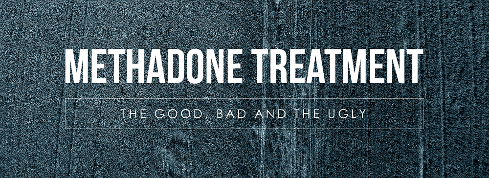

 Methadone is a great way of dealing with heroin addiction as the positive effects greatly outweigh the negative. Even though Methadone may have some negative effects, most of these are just minor side effects which come along with it just like any medication, and with the correct and a well trained medic, these will also reduce. Choosing a trustworthy doctor and cooperation of the patient can also vastly reduce any other risks such as overdose or incorrect dosage. The negative effects of Methadone also seem nearly nonexistent in front of the negative effects of heroin such as infected heart lining and valves, liver and kidney disease, etc., as well as the mental effects. Methadone also has a advantage which is greater than just the patient as it also improves the society as a whole by reducing crime rates and the spread of HIV. According to World Health Organisation (Who), MMT significantly reduces drug injecting, decrease of HIV transmission, and the decrease of crime due to the search for illegal drugs.